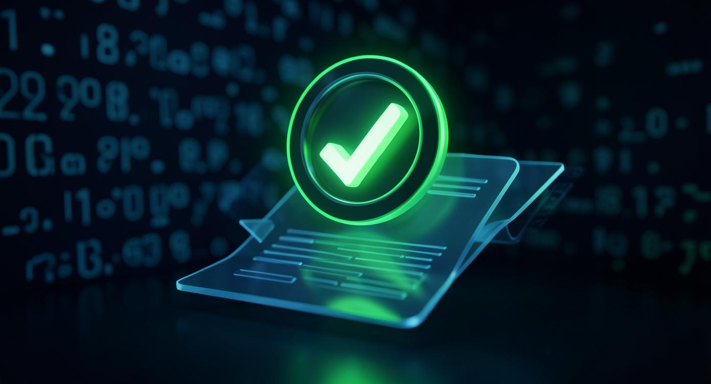

Digital Signature Kya Hai? DSC, eSign aur Process ki Poori Guide
GST return भरना हो, tender में bid डालनी हो, या कंपनी की कोई फाइल MCA पर जमा करनी हो — हर जगह एक ही चीज़ माँगी जाती है: digital signature। बहुत लोग इसे सिर्फ "USB token" समझते हैं और तब परेशान होते हैं जब token है फिर भी फाइल reject हो जाती है। असल में digital signature एक तकनीक है, token सिर्फ उसे सुरक्षित रखने का डिब्बा है।
इस आर्टिकल में मैं आसान भाषा में बताऊँगा कि digital signature क्या है और स्कैन किए हुए हस्ताक्षर से कैसे अलग है, यह अंदर से कैसे काम करता है, DSC और eSign में क्या फर्क है, कहाँ-कहाँ यह ज़रूरी है, नया DSC बनवाने के कदम और दस्तावेज़, token की सुरक्षा, और कानूनी पक्ष। साथ में वे गलतियाँ भी, जिनकी वजह से लोग बार-बार दफ्तरों के चक्कर लगाते हैं।
छोटा जवाब: digital signature एक cryptographic प्रक्रिया है जो document के content का hash बनाकर उसे आपकी private key से साइन करती है। इसे सत्यापित करने के लिए public key और certificate इस्तेमाल होते हैं। अगर document में एक अक्षर भी बदले, तो signature अमान्य हो जाता है। DSC एक digital certificate है जो token में रहता है, और eSign उसी काम का ऑनलाइन, Aadhaar-आधारित तरीका है।
Digital signature kya hai
कागज़ पर हस्ताक्षर यह बताते हैं कि व्यक्ति ने document देखा और सहमति दी। digital signature इससे आगे जाता है — यह यह भी साबित करता है कि document में हस्ताक्षर के बाद कोई बदलाव नहीं हुआ। यही अंतर इसे कानूनी और तकनीकी दोनों रूप से भरोसेमंद बनाता है।
स्कैन किए हुए हस्ताक्षर से फर्क
अगर आप कागज़ पर हस्ताक्षर करके उसे scan कर लेते हैं, तो वह सिर्फ एक तस्वीर है। उसे किसी भी दस्तावेज़ पर चिपकाया जा सकता है, और कोई नहीं बता सकता कि मूल कौन सा था। digital signature में ऐसा नहीं हो सकता, क्योंकि signature उस विशेष document के content से गणितीय रूप से जुड़ा होता है।
इसीलिए सरकारी portals स्कैन किए हस्ताक्षर को मान्य नहीं मानते। वहाँ DSC या eSign ही चलता है, क्योंकि वहाँ सत्यापन (verification) संभव है — कोई भी तीसरा पक्ष जाँच सकता है कि signature असली है या नहीं।
e-sign और digital signature में अंतर
रोज़मर्रा की भाषा में लोग "e-sign" शब्द का इस्तेमाल हर ऑनलाइन हस्ताक्षर के लिए करते हैं, जिसमें email के नीचे टाइप किया नाम भी शामिल है। कानूनी रूप से यह अलग है। साधारण electronic signature सबूत के तौर पर काम आ सकता है, पर जहाँ कानून या portal विशेष रूप से digital signature माँगता है, वहाँ DSC या Aadhaar eSign ही चलेगा।
यह अंदर से कैसे काम करता है
इस प्रक्रिया को समझने के लिए तीन चीज़ें याद रखें — hash, private key और public key। hash document का एक छोटा, अनोखा "fingerprint" है। private key सिर्फ आपके पास रहती है, और public key आपके certificate में सबके लिए उपलब्ध होती है।
- signing software document का hash बनाता है।
- वह hash आपकी private key से encrypt होता है — यही digital signature है।
- signature document के साथ जुड़ जाता है, और आपका certificate भी साथ भेजा जाता है।
- सामने वाला public key से signature खोलकर hash निकालता है।
- वही document से दोबारा hash बनाकर दोनों की तुलना करता है।
- दोनों hash मिलें तो signature सही; एक अक्षर बदला तो मेल नहीं खाएगा।
| हिस्सा | किसके पास | काम |
|---|---|---|
| Hash | दोनों पक्ष | Document का बदलाव पकड़ना |
| Private key | सिर्फ हस्ताक्षरकर्ता | Signature बनाना |
| Public key | Certificate में सबके लिए | Signature जाँचना |
| Certificate | Certifying Authority जारी करता है | यह जोड़ना कि key किसकी है |
यहाँ एक ज़रूरी बात है — digital signature document को गुप्त नहीं करता। वह यह साबित करता है कि document किसने भेजा और उसमें बदलाव हुआ या नहीं। गोपनीयता के लिए encryption अलग चीज़ है, और दोनों साथ इस्तेमाल हो सकते हैं।
DSC, eSign aur token: कौन क्या है
बाजार में कई नाम सुनने को मिलते हैं, इसलिए यह साफ कर लेना ज़रूरी है।
| प्रकार | कहाँ रहता है | कहाँ काम आता है |
|---|---|---|
| DSC (USB token) | एक hardware token में | GST, MCA, tender, income tax portals |
| Aadhaar eSign | ऑनलाइन, OTP से | कई सरकारी और निजी सेवाएँ |
| Document Signer | संगठन के लिए | बड़ी संख्या में documents पर मुहर |
| Encryption certificate | Token या software में | Email और files को गुप्त करना |
DSC में भी classes होती हैं और उनका इस्तेमाल अलग-अलग जगहों पर होता है। नया certificate लेने से पहले यह देखें कि जिस portal पर आपको काम करना है, वह कौन सा प्रकार माँगता है — कई बार लोग गलत certificate ले लेते हैं और फिर दोबारा बनवाना पड़ता है।
कहाँ-कहाँ ज़रूरी है
GST। कंपनियों और LLPs के लिए कई returns और forms पर DSC अनिवार्य है।
MCA। कंपनी के incorporation, annual filings और कई forms पर director का DSC लगता है।
Income Tax। कुछ cases में return और forms पर digital signature चाहिए, खासकर कंपनियों और audit वाले मामलों में।
Tenders और e-procurement। सरकारी और कई निजी portals पर bid जमा करने के लिए DSC ज़रूरी होता है; कुछ जगह encryption certificate भी माँगा जाता है।
e-Way bill और अन्य portals। कई राज्य और विभाग अब पूरी प्रक्रिया ऑनलाइन कर चुके हैं, जहाँ हस्ताक्षर का यही तरीका चलता है।
बैंक और वित्तीय सेवाएँ। कॉर्पोरेट खातों और कुछ loan documents में भी अब digital signing आम हो रही है।
नया DSC बनवाने के 6 कदम
यह काम एक बार का है, पर इसमें छोटी-छोटी चूकें समय खराब करती हैं। यह क्रम अपनाएँ।
कदम 1 — ज़रूरत तय करें। पहले देखें कि portal कौन सा certificate माँगता है और कितने साल के लिए। यह जानकारी portal के help section में मिल जाती है।
कदम 2 — सही CA चुनें। भारत में certifying authorities लाइसेंस प्राप्त होते हैं। उनकी सूची और मान्यता आधिकारिक स्रोत पर जाँचें, और ऐसी जगह से न लें जो सिर्फ सस्ता दाम दिखाए।
कदम 3 — दस्तावेज़ तैयार रखें। आम तौर पर PAN, Aadhaar, पता प्रमाण, फोटो और संगठन के लिए registration के कागज़ चाहिए होते हैं। नाम की spelling सब जगह एक जैसी रखें।
कदम 4 — verification पूरा करें। कई जगह video verification या in-person verification होता है। इस चरण में दिए गए नंबर और email सक्रिय होने चाहिए।
कदम 5 — token और installation। certificate token में आता है। उसे चलाने के लिए driver और signing utility install करनी पड़ती है। पहले एक बार छोटे document पर test करें।
कदम 6 — backup और expiry याद रखें। certificate की validity और renewal की तारीख नोट करें। expiry से पहले renewal करें, वरना फाइलिंग के दिन दिक्कत होगी।
ज़रूरी दस्तावेज़ों की सूची
- PAN card और Aadhaar card
- पते का प्रमाण — बिजली बिल, बैंक statement या rent agreement
- पासपोर्ट साइज़ फोटो
- मोबाइल नंबर और email, जो verification के समय उपलब्ध हों
- संगठन के लिए — incorporation certificate, GST certificate या partnership deed
- पहले से DSC हो तो उसका विवरण (कुछ मामलों में)
Token की सुरक्षा: 6 आदतें
Token के अंदर private key होती है। अगर वह किसी और के हाथ लगे और password पता हो, तो वह आपके नाम पर documents साइन कर सकता है। इसलिए यह सिर्फ device नहीं, पहचान है।
- Token को हमेशा अपने पास रखें, दूसरों को उधार न दें।
- Password किसी file, chat या diary में साफ शब्दों में न रखें।
- सार्वजनिक कंप्यूटर पर signing न करें।
- Token खोने पर तुरंत CA को सूचित करें और revoke कराएँ।
- Signing के बाद software बंद करें और token निकाल लें।
- Expiry से पहले renewal करें, और पुराने token को सुरक्षित तरीके से retire करें।
एक व्यावहारिक आदत यह भी रखें — token और उसका password अलग-अलग जगह रखें, और renewal की तारीख उसी महीने calendar में डालें जिस महीने में token खरीदा गया था। जब कई लोगों के tokens हों, तो एक साधारण शीट में नाम, token का क्रमांक, जारी होने की तारीख और expiry लिखें। यह शीट फाइलिंग के दिन सबसे ज़्यादा काम आती है, खासकर जब किसी कर्मचारी की जगह नया व्यक्ति काम संभालता है।

कानूनी पक्ष: कितना मान्य है
भारत में electronic records और digital signatures को Information Technology Act, 2000 के तहत मान्यता मिली है। कानून के अनुसार जहाँ किसी दस्तावेज़ पर हस्ताक्षर की ज़रूरत होती है, वहाँ निर्धारित तरीके से किया गया electronic signature उस शर्त को पूरा करता है, बशर्ते उस दस्तावेज़ के लिए कोई अपवाद लागू न हो।
कुछ दस्तावेज़ ऐसे हैं जिनके लिए कानून अलग नियम बताता है — जैसे will, trust या कुछ विशेष प्रकार के agreements। ऐसे मामलों में डिजिटल हस्ताक्षर पर्याप्त नहीं हो सकता। इसलिए बड़े या संवेदनशील लेन-देन में वकील से एक बार पुष्टि करा लें, खासकर अगर विवाद की संभावना हो।
एक और बात — signature की validity इस बात पर भी निर्भर करती है कि certificate उस समय मान्य था या नहीं। अगर certificate expire हो चुका है या revoke हो गया है, तो बाद में सत्यापन में दिक्कत आ सकती है। इसलिए पुराने documents के साथ signature की तारीख और certificate की validity दोनों सुरक्षित रखें।
5 गलतियाँ जो सबसे ज़्यादा होती हैं
पहली — गलत class या गलत प्रकार का certificate लेना, क्योंकि portal कुछ और माँगता है। दूसरी — token का driver पहले से install न करना और deadline के दिन परेशान होना। तीसरी — नाम की spelling या पते का मेल न होना, जिससे verification अटक जाती है। चौथी — expiry की तारीख न याद रखना। पाँचवीं — signed document का मूल copy और certificate विवरण संभालकर न रखना।
इनमें पाँचवीं का असर सबसे देर से दिखता है। दो साल बाद जब किसी पुराने agreement की जाँच होती है, तब पता चलता है कि signature की तारीख या certificate का विवरण कहीं दर्ज ही नहीं था।
मैंने इस process से क्या सीखा
सबसे बड़ी सीख यह रही कि digital signature को "खरीदने की चीज़" नहीं, "संभालने की चीज़" मानना चाहिए। जिन टीमों ने एक जगह सारे tokens, उनकी expiry और renewal की सूची रखी, उनके काम कभी deadline पर नहीं अटके। जहाँ हर व्यक्ति अपना token अलग संभालता था, वहाँ हर साल कुछ न कुछ छूट जाता था।
दूसरी सीख — पहले portal की ज़रूरत पढ़ें, फिर certificate खरीदें। मैंने ऐसे कई मामले देखे जहाँ एक ही व्यक्ति के पास दो tokens थे, सिर्फ इसलिए कि पहला खरीदते समय यह जाँचा नहीं गया कि कौन सा प्रकार चाहिए।
तीसरी सीख — सत्यापन के बारे में साफ समझ रखें। Signature यह साबित करता है कि document किसने और बिना बदलाव के भेजा; यह नहीं कि दस्तावेज़ का हर दावा सच है। यह अंतर समझने से गलत भरोसा टूटता है और जाँच की आदत बनती है।
अक्सर पूछे जाने वाले सवाल
क्या मोबाइल से digital signature किया जा सकता है?
हाँ, Aadhaar eSign जैसे ऑनलाइन तरीकों से बिना token हस्ताक्षर हो सकते हैं, अगर portal उसे स्वीकार करता है। जहाँ portal सिर्फ token वाला DSC माँगता है, वहाँ मोबाइल से काम नहीं चलेगा।
DSC और digital signature एक ही चीज़ हैं?
नहीं। DSC एक certificate है जो आपकी पहचान और key को जोड़ता है। Digital signature वह प्रक्रिया है जिससे document पर हस्ताक्षर बनता है। DSC उस प्रक्रिया का हिस्सा है, पूरी प्रक्रिया नहीं।
क्या एक certificate कई portals पर चलता है?
अक्सर हाँ, अगर वह उस portal की ज़रूरत के प्रकार का है। पर कुछ portals अलग class या अलग प्रकार माँगते हैं, इसलिए पहले जाँच लें।
Token खो जाए तो क्या करें?
तुरंत CA को सूचित करके certificate revoke कराएँ और नया बनवाएँ। देर करने पर कोई और आपके नाम पर documents साइन कर सकता है।
क्या PDF पर भी signature लगता है?
हाँ, PDF पर digital signature लगाया और सत्यापित किया जा सकता है। कई readers सीधे बता देते हैं कि signature मान्य है या document बदला गया है।
आगे क्या करें
अगर आप अपनी कंपनी के कागज़ी काम को डिजिटल कर रहे हैं, तो सिर्फ signature लेना काफी नहीं — process भी साथ में बदलना पड़ता है। हमारी legacy system modernization की गाइड और self-service apps वाला आर्टिकल यह क्रम समझने में मदद करेंगे। बाहरी tools के फैसले के लिए SaaS outsourcing की गाइड पढ़ें।
आगे पढ़ें: certifying authorities की आधिकारिक जानकारी Controller of Certifying Authorities पर, कंपनी फाइलिंग के नियम MCA पर और GST से जुड़े forms GST portal पर देखें। नियम और फीस बदलती रहती हैं, इसलिए ताज़ा जानकारी वहीं से लें।